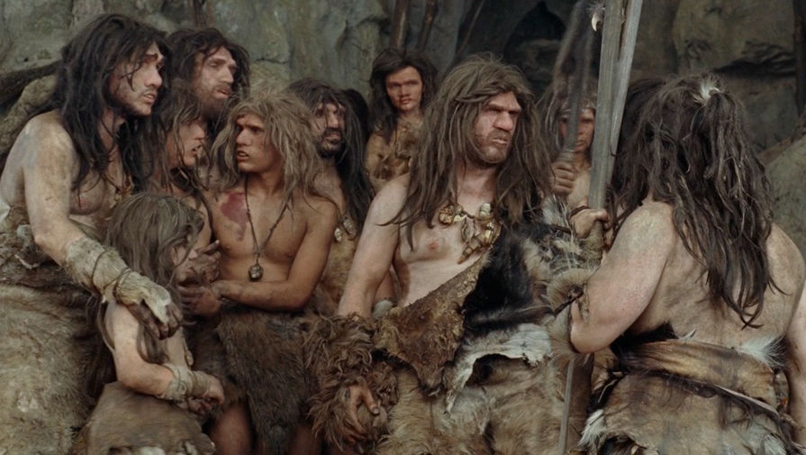

Антропологи: одежда помогла
кроманьонцам пережить неандертальцев
Международная команда антропологов провела исследование и выяснила: неандертальцы, в отличие от кроманьонцев, носили менее качественную одежду — и это могло поспособствовать их вымиранию. С текстом работы можно ознакомиться в научном издании Journal of Anthropological Archaeology.
Конечно, одежда кроманьонцев и неандертальцев не сохранилась, однако сохранились останки животных на их стоянках. Конечно, одежда кроманьонцев и неандертальцев не сохранилась, однако сохранились останки животных на их стоянках. Специалисты проанализировали их видовой состав и посмотрели, шкуры каких из этих животных в недалеком прошлом использовались людьми. В результате ученые составили таблицу, из шкур каких зверей неандертальцы и кроманьонцы могли изготавливать одежду. «Мы выяснили, что и неандертальцы, и кроманьонцы активно использовали шкуры мамонтов», — комментируют антропологи. При этом ученые обнаружили, что кроманьонцы гораздо чаще, чем неандертальцы, охотились на куньих, псовых и зайцевых и делали из них одежду.ЕЕЕЕ».
Также антропологи выяснили, что, согласно археологическим находкам, неандертальцы практически не использовали различные орудия для изготовления одежды, в то время как кроманьонцы использовали fgbfgbfgbgиглы и различные скребки. Поэтому одежда первых была, вероятно, примитивна, а одежда вторых больше напоминала одежду современного человека.
По словам ученых, некачественная одежда неандертальцев могла способствовать тому, что они часто погибали от холода и не могли передвигаться на север.
В то время как кроманьонцы, кутаясь в теплые шкуры, могли долго находиться на холоде, при этом не заболевая.
НЕАНДЕРТАЛЬЦИ